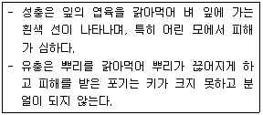
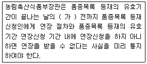
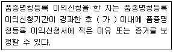
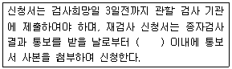
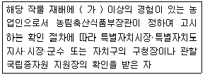
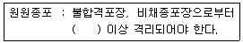

종자기사 (2017-08-26 기출문제)
1과목: 종자생산학
1. 옥수수 단교잡종의 파종량을 25kg/10a로 하였을 때 10a에서 기대되는 채종량은?
- 500kg
- 1000kg
- 1400kg
- 1900kg
(정답률: 52%)

2. 두 작물 간 교잡이 가장 잘 되는 것은?
- 참외 × 멜론
- 오이 × 참외
- 멜론 × 오이
- 양파 × 파
(정답률: 87%)
3. 오이 종자의 성숙일 수는 교배 후 40일 내외이다. 완숙하여 수확한 오이의 종과는 며칠 정도 후숙시키는 것이 적절한가?
- 1~4일
- 4~7일
- 7~10일
- 10~13일
(정답률: 66%)
4. 종자 증식 시 포장검사를 실시하기에 가장 알맞은 시기는?
- 발아기
- 생육초기
- 개화기
- 수확기
(정답률: 55%)
5. 4계성 딸기에 대한 설명으로 옳지 않은 것은?
- 종자번식이 용이하다.
- 저위도 지방의 원산지에서 유래한 것이다.
- 주년(週年) 개화·착과 되는 특성을 갖는다.
- 우리나라에서는 주로 여름철 재배에 이용된다.
(정답률: 64%)
6. 옥수수의 화기구조 및 수분양식과 관련하여 옳은 것은?
- 충매수분
- 양성화
- 자웅이주
- 자웅동주이화
(정답률: 70%)
7. 종자 생산에 있어서 웅성불임을 이용하는 이유는?
- 종자 생산량이 증가한다.
- 품종의 내병성이 증가한다.
- 종자의 순도유지가 쉽다.
- 교잡이 간편하다.
(정답률: 73%)
8. 국내에서 1대 잡종(F1) 종자생산에 웅성불임성을 이용하는 것은?
- 당근
- 배추
- 양배추
- 꽃양배추
(정답률: 62%)
9. 다음 종자 기관 중 종피가 되는 부분은?
- 주심
- 주피
- 주병
- 배낭
(정답률: 87%)
10. 종자의 발아시험기간이 끝난 후에도 발아되지 않은 신선종자에 대한 설명으로 옳지 않은 것은?
- 생리적 휴면종자이다.
- 무배(無胚) 종자도 여기에 속한다.
- 주어진 조건에서 발아하지 못하였으나 깨끗하고 건실한 종자이다.
- 규정된 한 가지 방법으로 처리 후 재시험한다.
(정답률: 60%)
11. 옥수수 종자는 수정 후 며칠쯤이 되면 발아율이 최대에 달하는가?
- 13일
- 21일
- 31일
- 43일
(정답률: 63%)
12. 다음 중 채종종자의 안전건조온도가 가장 낮은 것은?
- 벼
- 콩
- 옥수수
- 양파
(정답률: 66%)
13. 종자 순도분석의 결과를 옳게 나타내는 것은?
- 구성요소의 무게를 소수점 아래 한 자리까지
- 구성요소의 무게를 소수점 아래 두 자리까지
- 구성요소의 무게를 백분율로 소수점 아래 한 자리까지
- 구성요소의 무게를 백분율로 소수점 아래 두 자리까지
(정답률: 67%)
14. 수박의 꽃에 대한 설명으로 옳지 않은 것은?
- 단성화이다.
- 오전 이른 시각에 수정이 잘 된다.
- 암꽃의 씨방에서는 여러 개의 배주가 생긴다.
- 단위 결과로 만들어진 종자가 다음 대에 씨없는 수박이 된다.
(정답률: 69%)
15. 생장조절제에 의한 일반적인 휴면 타파방법에 관한 설명으로 틀린 것은?
- 휴면타파에 이용되는 생장조절제 종류로는 gibberellin, cytokinin, kinetin이 있다.
- 야생귀리 종자에 효과적인 gibberellin의 농도는 ~M이다.
- gibberellin과 ABA의 혼합처리는 휴면타파 효과를 증진시킨다.
- gibberellin은 휴면타파에 효과가 있으며, 휴면하지 않는 종자에서도 발아촉진효과가 있다.
(정답률: 87%)
16. 다음 중 제웅방법이 아닌 것은?
- 유전적 제웅
- 화학적 제웅
- 기계적 제웅
- 병리적 제웅
(정답률: 78%)
17. 교잡 시 개화기 조절을 위하여 적심을 하는 작물은?
- 양파
- 상추
- 참외
- 토마토
(정답률: 65%)
18. 세포질적 · 유전자적 웅성불임을 이용하여 F1종자를 생산할 경우, 임성을 가진 F1종자를 얻게 되는 것은?
- 웅성불임의 종자친(자방친)과 웅성불임 화분친을 교잡할 때
- 웅성가임의 종자친(자방친)과 웅성불임 화분친을 교잡할 때
- 웅성가임의 종자친(자방친)과 임성회복 화분친을 교잡할 때
- 웅성불임의 종자친(자방친)과 임성회복 화분친을 교잡할 때
(정답률: 69%)
19. 다음 중 일반적으로 종자의 발아촉진 물질이 아닌 것은?
- Gibberellin
- ABA
- Cytokinin
- Auxin
(정답률: 91%)
20. 다음 중 안전저장을 위한 종자의 최대수분함량이 가장 낮은 것은?
- 벼
- 콩
- 토마토
- 시금치
(정답률: 33%)
2과목: 식물육종학
21. 자가불화합성 식물을 자가수정 시켜 종자를 얻을 수 있는 방법으로만 알맞게 짝지어진 것은?
- 종간교배, 뇌수분
- 뇌수분, 노화수분
- 노화수분, 정역교배
- 정역교배, 종간교배
(정답률: 80%)
22. 유전자형이 Aa인 이형접합체를 지속적으로 자가수정 하였을 때 후대집단의 유전자형 변화는?
- Aa 유전자형 빈도가 늘어난다.
- 동형접합체와 이형접합체 빈도의 비율이 1:1이 된다.
- Aa 유전자형 빈도가 변하지 않는다.
- 동형접합체 빈도가 계속 증가한다.
(정답률: 64%)
23. 벼의 조생종과 만생종을 교배시키려고 한다. 가장 알맞은 방법은?
- 조생종을 장일처리 한다.
- 만생종을 단일처리 한다.
- 조생종을 단일처리 한다.
- 만생종을 저온처리 한다.
(정답률: 63%)
24. 다음 중 조기검정법을 적용하여 목표 형질을 선발할 수 있는 경우는?
- 나팔꽃은 떡잎의 폭이 넓으면 꽃이 크다.
- 배추는 결구가 되어야 수확한다.
- 오이는 수꽃이 많아야 암꽃도 많다.
- 고추는 서리가 올 때까지 수확하여야 수량성을 알게 된다.
(정답률: 74%)
25. F3이후의 계통 선발에 대한 설명으로 가장 옳은 것은?
- 계통군을 선발한 다음 계통을 선발한다.
- 계통을 선발한 다음 계통군을 선발한다.
- 유전력이 작은 양적형질은F3~F4세대에 고정계통을 선발한다.
- 유전력이 큰 질적형질은F7~F8세대에 개체선발을 시작한다.
(정답률: 56%)
26. 다음 중 유전적 변이를 감별하는 방법으로 가장 알맞은 것은?
- 유의성 검정
- 후대검정
- 전체형성능(totipotency) 검정
- 질소 이용률 검정
(정답률: 86%)
27. 다음 중 임성이 가장 높은 것은?
- AABBDD
- ABDD
- AADDD
- ABD
(정답률: 81%)
28. 여교배육종에 대해 바르게 설명한 것은?
- 3개 이상의 교배친이 필요하다.
- 반복친의 특성을 충분히 회복해야 한다.
- 타가수분작물만 가능하다.
- 4배체 식물이 유리하다.
(정답률: 76%)
29. 동질 4배체 간 F1식물체의 유전자형이 AAaa일 때 자가수분 된 F2세대에서의 표현형 분리비는? (단, A가 a에 대하여 완전우성임)
- 3:1
- 15:1
- 35:1
- 63:1
(정답률: 53%)
30. 재조합 DNA를 생식과정을 거치지 않고 식물 세포로 도입하여 새로운 형질을 나타나게 하는 기술은?
- 세포 융합기술
- 원형체 융합기술
- 형질전환 기술
- 약배양 기술
(정답률: 66%)
31. 자가불화합성 식물에서 반수체육종이 유리한 점은?
- 반수체는 특성검정을 할 필요가 없다.
- 유전적 변이가 크다.
- 돌연변이가 많이 나온다.
- 유전적으로 고정이 된다.
(정답률: 65%)
32. 채종재배에 의하여 조속히 종자를 증식해야 할 때 적절한 방법은?
- 밀파(密播)하여 작은 묘를 기른다.
- 다비밀식(多肥密植)재배를 한다.
- 조기 재배를 한다.
- 박파(薄播)를 하여 큰 묘를 기른다.
(정답률: 50%)
33. 분자표지를 이용하는 육종을 설명한 것으로 틀린 것은?
- 분자표지는 다양한 품종 간 DNA 염기서열의 차이를 이용해서 제작할 수 있다.
- 분자표지의 유전분리는 일반 유전자와 같은 분리방식을 따른다.
- DNA 분자표지는 환경에 영향을 받지 않기 때문에 선발시 안정적으로 사용할 수 있다.
- 품종 간에 근연일수록 분자표지의 다형성이 높아서 이용하기 쉽다.
(정답률: 67%)
34. 배수체 작성에 쓰이는 약품 중 콜히친의 분자구조를 기초로 하여 발견된 것은?
- 아세나프텐
- 지베렐린
- 멘톨
- 헤테로옥신
(정답률: 76%)
35. 유전자원의 액티브 콜렉션(Active collection) 저장조건으로 옳은 것은?
- 종자수분을 15%로 한 다음 –18℃에 저장
- 종자수분을 5±1%로 한 다음 4℃에 저장
- 종자수분을 15%로 한 다음 4℃에 저장
- 종자수분을 5±1%로 한 다음 –18℃에 저장
(정답률: 58%)
36. 1대 잡종 품종의 교배친이 갖추어야 할 조건으로 틀린 것은?
- 유전적으로 고정되어 있어야 한다.
- 조합능력이 우수해야 한다.
- 병해충 저항성 같은 실용적 형질을 지니고 있어야 한다.
- 두 교배친 간 유전적 거리가 가까워야 한다.
(정답률: 68%)
37. 타식성 식물에 대한 설명으로 옳은 것은?
- 유전자형이 동형접합(homozygosity)이다.
- 단성화와 자가불임의 양성화뿐이다.
- 자연계에서 서로 다른 개체 간 수정되는 비율이 높은 식물이다.
- 자웅이숙 식물만이 순수한 타식성 식물이다.
(정답률: 83%)
38. 웅성불임성의 발현에 해당하는 것은?
- 무배생식
- 위수정
- 수술의 발생억제
- 배낭모세포의 감수분열 이상
(정답률: 74%)
39. 신품종의 특성을 유지하는데 있어서 품종의 퇴화가 큰 문제가 되고 있는데, 품종의 퇴화 원인을 설명한 것으로 틀린 것은?
- 근교 약세에 의한 퇴화
- 기계적 혼입에 의한 퇴화
- 주동 유전자의 분리에 의한 퇴화
- 기회적 변동에 의한 퇴화
(정답률: 62%)
40. 식물에 있어서 타가수정율을 높이는 기작이 아닌 것은?
- 폐화수정
- 자웅이주
- 자가불화합성
- 웅예선숙
(정답률: 84%)
3과목: 재배원론
41. 다음 중 작물 생육에 가장 적합한 토양 구조는?
- 이상구조
- 단립(單粒)구조
- 입단구조
- 혼합구조
(정답률: 82%)
42. 다음 중 투명 플라스틱 필름의 멀칭 효과가 아닌 것은?
- 지온상승
- 잡초 발생 억제
- 토양 건조 방지
- 비료의 유실 방지
(정답률: 71%)
43. 에틸렌의 전구물질에 해당하는 것은?
- tryptophan
- methionine
- acetyl CoA
- proline
(정답률: 54%)
44. 다음 중 작물의 주요온도에서 최적온도가 가장 낮은 작물은?
- 보리
- 완두
- 옥수수
- 벼
(정답률: 55%)
45. 음지 식물의 특성으로 옳은 것은?
- 광보상점이 높다.
- 광을 강하게 받을수록 생장이 좋다.
- 수목 밑에서는 생장이 좋지 않다.
- 광포화점이 낮다.
(정답률: 77%)
46. 다음 중 발아시 호광성 종자 작물로만 짝지어진 것은?
- 호박, 토마토
- 상추, 담배
- 토마토, 가지
- 벼, 오이
(정답률: 78%)
47. 우리나라 주요 작물의 기상생태형에서 감온형에 해당하는 것은?
- 그루콩
- 올콩
- 그루조
- 가을메밀
(정답률: 75%)
48. 다음 중 적심의 효과가 가장 크게 나타나는 작물은?
- 벼
- 옥수수
- 담배
- 조
(정답률: 60%)
49. 장해형 냉해에 대한 설명으로 옳은 것은?
- 출수기 이후 등숙 기간 동안의 냉온으로 등숙률이 낮아진다.
- 융단조직이 비대해진다.
- 수수 감소 및 출수 지연 등의 장해를 받는다.
- 질소의 다비를 통해 피해를 경감시킬 수 있다.
(정답률: 36%)
50. 질산 환원 효소의 구성 성분으로 콩과작물의 질소고정에 필요한 무기성분은?
- 몰리브덴
- 철
- 마그네슘
- 규소
(정답률: 67%)
51. 다음 중 작물의 내동성에 대한 설명으로 옳은 것은?
- 포복성인 작물이 직립성보다 약하다.
- 세포내의 당함량이 높으면 내동성이 감소된다.
- 작물의 종류와 품종에 따른 차이는 경미하다.
- 원형질의 수분투과성이 크면 내동성이 증대된다.
(정답률: 75%)
52. 등고선에 따라 수로를 내고, 임의의 장소로부터 월류하도록 하는 방법은?
- 보더관개
- 수반관개
- 일류관개
- 고랑관개
(정답률: 55%)
53. 다음 중 우리나라가 원산지인 작물로만 나열된 것은?
- 벼, 참깨
- 담배, 감자
- 감, 인삼
- 옥수수, 고구마
(정답률: 82%)
54. 화곡류 잎의 표피 조직에 침전되어 병에 대한 저항성을 증진시키고 잎을 곧게 지지하는 역할을 하는 원소는?
- 칼륨
- 인
- 칼슘
- 규소
(정답률: 66%)
55. 토양 수분 항수로 볼 때 강우 또는 충분한 관개 후 2~3일 뒤의 수분 상태를 무엇이라 하는가?
- 포장용수량
- 최대용수량
- 초기위조점
- 영구위조점
(정답률: 75%)
56. 다음 중 수중에서 종자가 발아를 하지 못하는 작물은?
- 벼
- 상추
- 당근
- 콩
(정답률: 52%)
57. 다음 중 고온에 의한 작물 생육 저해의 원인이 아닌 것은?
- 유기물의 과잉소모
- 암모니아의 소모
- 철분의 침전
- 증산과다
(정답률: 69%)
58. 식물의 진화과정으로 옳은 것은?
- 적응 → 순화 → 도태 → 유전적 변이
- 적응 → 유전적 변이 → 순화 → 도태
- 유전적 변이 → 순화 → 도태 → 적응
- 유전적 변이 → 도태 → 적응 → 순화
(정답률: 59%)
59. 풍해를 받을 때 작물체에 나타나는 생리적 장해로 틀린 것은?
- 호흡의 증대
- 광합성의 감퇴
- 작물체의 건조
- 작물체온의 증가
(정답률: 79%)
60. 굴광현상에 가장 유효한 광은?
- 적색광
- 자외선
- 청색광
- 적외선
(정답률: 73%)
4과목: 식물보호학
61. 잡초와 작물간의 경합에 관여하는 요인으로 가장 거리가 먼 것은?
- 광
- 수분
- 영양분
- 토양미생물
(정답률: 86%)
62. 주로 저장 곡식에 피해를 주는 해충은?
- 화랑곡나방
- 온실가루이
- 꽃노랑총채벌레
- 아메리카잎굴파리
(정답률: 78%)
63. 국제간 교역량의 증가에 따라 침입 병해충을 사전에 예방하기 위한 조치는?
- 법적 방제법
- 생물적 방제법
- 물리적 방제법
- 화학적 방제법
(정답률: 84%)
64. 다음 설명에 해당하는 해충은?

- 벼밤나방
- 벼혹나방
- 벼물바구미
- 끝동매미충
(정답률: 79%)
65. 병원균이 특정 품종의 기주식물을 침해할 뿐 다른 품종은 침해하지 못하는 집단은?
- 클론
- 품종
- 레이스
- 분화형
(정답률: 82%)
66. 계면활성제에 대한 설명으로 옳지 않은 것은?
- 약액의 표면장력을 높이는 작용을 한다.
- 대상 병해충 및 잡초에 대한 접촉효율을 높인다.
- 소수성 원자단과 친수성 원자단을 동일 분자 내에 갖고 있다.
- 물에 잘 녹지 않는 농약의 유효성분을 살포 용수에 잘 분산시켜 균일한 살포작업을 가능하게 한다.
(정답률: 62%)
67. 광발아 잡초에 해당하는 것은?
- 냉이
- 별꽃
- 쇠비름
- 광대나물
(정답률: 66%)
68. 우리나라 맥류 포장에 주로 발생하는 광엽 1년생 잡초는?
- 명아주
- 뚝새풀
- 괭이밥
- 개망초
(정답률: 64%)
69. 다알리아, 튤립, 글라디올러스 등에 발생하는 바이러스병의 가장 중요한 1차 전염원은?
- 비료
- 구근
- 곤충
- 양액
(정답률: 77%)
70. 해충종합관리(IPM)에 대한 설명으로 옳은 것은?
- 농약의 항공방제를 말한다.
- 여러 방제법을 조합하여 적용한다.
- 한 가지 방법으로 집중적으로 방제한다.
- 한 지역에서 동시에 방제하는 것을 뜻한다.
(정답률: 89%)
71. 농약을 사용하면서 발생하는 약해가 아닌 것은?
- 섞어 쓰기로 인한 약해
- 근접 살포에 의한 약해
- 동시 사용으로 인한 약해
- 유효기간 경과로 인한 약해
(정답률: 63%)
72. 잡초 방제에 사용하는 생물의 조건으로 옳지 않은 것은?
- 잡초 외 유용식물은 가해하지 않아야 한다.
- 문제시 되는 잡초보다 빠른 번식특성을 지녀야 한다.
- 새로운 지역에서의 환경과 생물에 대한 적응성과 저항성이 있어야 한다.
- 산재해 있는 문제 잡초를 선별적으로 찾아다니는 이동성이 적어야 한다.
(정답률: 79%)
73. 식물병의 제1차 전염원 소재로 가장 거리가 먼 것은?
- 토양
- 잡초
- 화분(꽃가루)
- 병든 식물의 잔재물
(정답률: 63%)
74. 유충이 고추나 가지를 비롯한 기주식물에 지표 가까운 줄기를 끊어 피해를 주는 해충은?
- 총채벌레
- 담배나방
- 거세미나방
- 배추흰나비
(정답률: 53%)
75. 25% 제초제 유제(비중 1.0)를 0.⑤%의 살포액 1L로 만드는 데 소요되는 물의 양은?
- 49.9L
- 499L
- 499mL
- 4990mL
(정답률: 35%)
76. 곤충의 순환계에 대한 설명으로 옳지 않은 것은?
- 온몸에 혈관이 있다.
- 혈액이 세포와 직접 닿는 것은 아니다.
- 사람처럼 혈관을 따라 혈액이 흐르지 않는다.
- 체강 내 체액과 함께 섞여 순환하는 개방 순환계이다.
(정답률: 62%)
77. 액상시용제의 물리적 성질에 해당하지 않는 것은?
- 유화성
- 응집성
- 수화성
- 습전성
(정답률: 51%)
78. 1월 평균기온이 12℃ 이상인 경우에만 월동이 가능하여 우리나라에서 월동하기 어려운 비래해충은?
- 애멸구
- 벼멸구
- 끝동매미충
- 이화명나방
(정답률: 51%)
79. 사과나무 부란병에 대한 설명으로 옳은 것은?
- 기주교대를 한다.
- 균사 형태로 전염된다.
- 잡초에 병원체가 월동하며 토양으로 전염된다.
- 주로 빗물에 의해 전파되며 발병부위에서 알코올 냄새가 난다.
(정답률: 77%)
80. 잡초로 인한 피해가 아닌 것은?
- 방제 비용의 증대
- 작물의 수확량 감소
- 경지의 이용 효율 감소
- 철새 등 조류에 의한 피해 증가
(정답률: 85%)
5과목: 종자관련법규
81. 과수와 임목의 경우 품종보호권의 존속기간은 품종보호권이 설정등록된 날부터 몇 년으로 하는가?
- 15년
- 20년
- 25년
- 30년
(정답률: 78%)
82. 대통령령으로 자격기준을 갖춘 사람으로서 종자관리사가 되려는 사람은 농림축산식품부령으로 정하는 바에 따라 농림축산식품부 장관에게 등록하여야 하는데, 등록을 하지 아니하고 종자관리사 업무를 수행한 자의 벌칙은?
- 6개월 이하의 징역 또는 3백만원 이하의 벌금에 처한다.
- 6개월 이하의 징역 또는 5백만원 이하의 벌금에 처한다.
- 1년 이하의 징역 또는 5백만원 이하의 벌금에 처한다.
- 1년 이하의 징역 또는 1천만원 이하의 벌금에 처한다.
(정답률: 83%)
83. 종자관련법상 품종목록 등재의 유효기간에 대한 내용이다. ( 가 )에 알맞은 내용은?

- 3개월
- 6개월
- 1년
- 2년
(정답률: 60%)
84. 종자관련법상 보증의 유효기간에 대한 내용으로 농림축산식품부 장관이 따로 정하여 고시하거나 종자관리사가 따로 정하는 경우를 제외하고, 기산일(起算日)을 가 보증종자의 포장(包裝)한 날로 할 때 고구마 보증의 유효기간은?
- 1개월
- 2개월
- 6개월
- 1년
(정답률: 64%)
85. 종자검사요령상 추출된 시료를 보관할 경우 검사 후에는 재시험에 대비하여 제출시료는 품질변화가 최소화되는 조건에서 보증일자로부터 원원종은 몇 년간 보관되어야 하는가?
- 1년
- 2년
- 3년
- 4년
(정답률: 64%)
86. 종자검사요령상 고온 항온건조기법을 사용하게 되는 종은?
- 부추
- 유채
- 오이
- 목화
(정답률: 54%)
87. 종자관리요강상 벼 포장검사 시 특정병에 해당하는 것은?
- 선충심고병
- 도열병
- 이삭누룩병
- 흰잎마름병
(정답률: 65%)
88. 식물신품종 보호법상 품종명칭등록 이의신청 이유 등의 보정에 대한 내용이다. ( 가 )에 알맞은 내용은?

- 5일
- 10일
- 20일
- 30일
(정답률: 80%)
89. 종자업의 등록에 관한 사항 중 대통령령으로 정하는 작물의 종자를 생산·판매하려는 자의 경우를 제외하고 종자업을 하려는 자는 종자관리사를 몇 명 이상 두어야 하는가?
- 1명
- 2명
- 3명
- 5명
(정답률: 86%)
90. 종자검사요령상 종자검사신청에 대한 내용이다. ( ) 안에 알맞은 내용은?

- 3일
- 7일
- 10일
- 15일
(정답률: 65%)
91. 종자관련법상 종자생산의 대행자격에서 “농림축산식품부령으로 정하는 종자업자 또는 농업인”에 해당하는 자에 대한 내용이다. ( 가 )에 알맞은 내용은?

- 6개월
- 1년
- 2년
- 3년
(정답률: 48%)
92. 종자관리요강상 감자의 포장격리에 대한 내용이다. ( ) 안에 알맞은 내용은?

- 20m
- 30m
- 40m
- 50m
(정답률: 63%)
93. 종자검사요령상 “빽빽히 군집한 화서 또는 근대 속에서는 화서의 일부”에 해당하는 용어는?
- 화방
- 영과
- 씨혹
- 석과
(정답률: 77%)
94. 종자관련법상 농림축산식품부장관은 종자산업의 육성 및 지원을 위하여 몇 년마다 농림종자산업의 육성 및 지원에 관한 종합계획을 수립·시행하여야 하는가?
- 5년
- 3년
- 2년
- 1년
(정답률: 77%)
95. 종자관리요강상 밀 포장검사 시 검사시기 및 회수는 유숙기로부터 황숙기 사이에 몇 회 실시하여야 하는가?
- 4회
- 3회
- 2회
- 1회
(정답률: 81%)
96. 식물신품종 보호법상 품종보호 요건에 해당하지 않는 것은?
- 신규성
- 우수성
- 구별성
- 균일성
(정답률: 69%)
97. 식물신품종 보호법상 침해죄 등에서 전용실시권을 침해한 자의 벌칙은?
- 3년 이하의 징역 또는 5백만원 이하의 벌금에 처한다.
- 5년 이하의 징역 또는 1천만원 이하의 벌금에 처한다.
- 5년 이하의 징역 또는 1억원 이하의 벌금에 처한다.
- 7년 이하의 징역 또는 1억원 이하의 벌금에 처한다.
(정답률: 80%)
98. 식물신품종 보호법상 종자위원회는 위원장 1명과 심판위원회 상임심판위원 1명을 포함한 몇 명 이상 몇 명 이하의 위원으로 구성하여야 하는가?
- 5명 이상 10명 이하
- 10명 이상 15명 이하
- 15명 이상 20명 이하
- 20명 이상 25명 이하
(정답률: 72%)
99. 종자업 등록을 한 날부터 1년 이내에 사업을 시작하지 아니하거나 정당한 사유없이 1년 이상 계속하여 휴업한 경우 시장·군수·구청장은 종자업자에게 어떤 것을 명할 수 있는가?
- 종자업 등록을 취소하거나 1개월 이내의 기간을 정하여 영업의 전부 또는 일부의 정지를 명할 수 있다.
- 종자업 등록을 취소하거나 3개월 이내의 기간을 정하여 영업의 전부 또는 일부의 정지를 명할 수 있다.
- 종자업 등록을 취소하거나 6개월 이내의 기간을 정하여 영업의 전부 또는 일부의 정지를 명할 수 있다.
- 종자업 등록을 취소하거나 12개월 이내의 기간을 정하여 영업의 전부 또는 일부의 정지를 명할 수 있다.
(정답률: 71%)
100. 종자검사요령상 이물에 해당하는 것은?
- 미숙립
- 주름진립
- 소립
- 진실종자가 아닌 종자
(정답률: 82%)